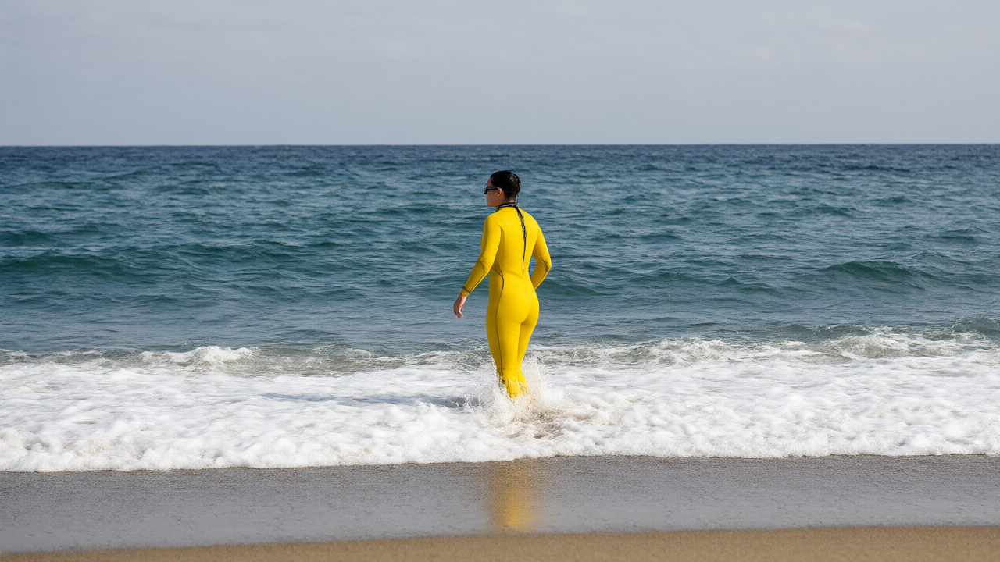

Ultra-endurance swimmer Catherine Breed completes historic 1,000-mile journey from Northern California to Mexico.
Catherine Breed has made history by becoming the first person to swim the entire coastline of California, navigating from the state's northernmost tip down to the Mexican border. The 33-year-old ultra-endurance swimmer completed the grueling 1,000-mile (1,600km) marathon on Monday in San Diego, marking the end of an 111-day expedition that tested her physical limits and mental resilience against one of the Pacific Ocean's most volatile seasons.
Breed’s journey began nearly four months ago, undertaken during a year characterized by historic super El Niño weather conditions. Her support team had prepared for encounters with sharks, storms, and pollution, but the sheer volatility of the Pacific presented challenges beyond initial expectations. Despite dodging hurricanes and swimming through waves reaching up to 8 feet, Breed successfully concluded her voyage on a beach in San Diego, joining an elite group of athletes who have set records for long-distance swims along coastlines such as Ireland, Iceland, and New Zealand.
The swim required significant logistical coordination, with Breed living onboard the sailboat Catalyst, which accompanied her throughout the journey. She spent more than 15 weeks in the water, typically swimming for four to five hours each day. The preparation involved not only physical conditioning but also mental strategies to manage the energy expenditure required for such a monumental feat. Breed described the experience as an out-of-body moment, noting that she is still trying to grasp the magnitude of what she has accomplished.
Inspiration for the project came from previous successful long-distance swims by others, including Ross Edgley’s circumnavigation of Great Britain and earlier coastal swims by Sean Conway and Jasmine Harrison. Breed’s own interest was sparked after completing a swim from the Golden Gate Bridge to Half Moon Bay in 2022, which revealed the unique challenges and rewards of coastal navigation. This earlier experience convinced her that a full-state swim was both possible and worth pursuing.
During the swim, Breed employed specific mental techniques to maintain focus. She recalled advice from her college coach about conserving energy units per day, avoiding overthinking or negative thoughts that could drain her stamina. Instead, she focused on breaking the day into manageable segments, coaching herself to reach the next 30 minutes or two miles. In rough conditions, her attention shifted to technical adjustments to protect her shoulders from the impact of large waves.
The ocean environment provided both companionship and obstacles. While wearing earplugs to block out crew communication, Breed often heard dolphins before they were visible to her support team. She described the sensation of swimming in swells as varying depending on direction; swimming into a swell felt like climbing a hill, while riding behind it offered a surfing-like experience. However, high winds and large swells required constant effort to maintain proper body positioning, with some waves even knocking her off balance.
Training for this specific challenge differed from her previous marathon swims, such as the English Channel crossing in 2018. Because she wore a wetsuit in California, she did not need to focus heavily on cold adaptation. Instead, her training emphasized building muscle mass and optimizing body composition, spending more time in the gym than in the water compared to previous expeditions. Her background in sailing and surfing also contributed to her comfort with wave mechanics and life on a moving vessel.
Despite her experience, there were days when Breed did not want to enter the water. She acknowledged that many mornings brought reluctance, but her commitment to the goal and her team outweighed her emotions. She viewed the project as larger than herself, requiring discipline regardless of her daily mood. The physical toll was compounded by the instability of living on a boat, where simple tasks like making breakfast or putting on a wetsuit became difficult due to the rolling motion of the sea.
One of the most nerve-wracking moments occurred near the end of the journey in San Diego, close to Imperial Beach and the Tijuana River. Breed was aware of the ongoing sewage pollution crisis in the area, where raw sewage and toxic chemicals flow into the ocean. Although she stayed three miles offshore and took prophylactic antibiotics, the knowledge of the contamination added a layer of anxiety to the final leg of her historic swim.
All factual claims in the draft article are directly supported by the provided reference text from The Guardian. No contradictions or unsupported claims were found.